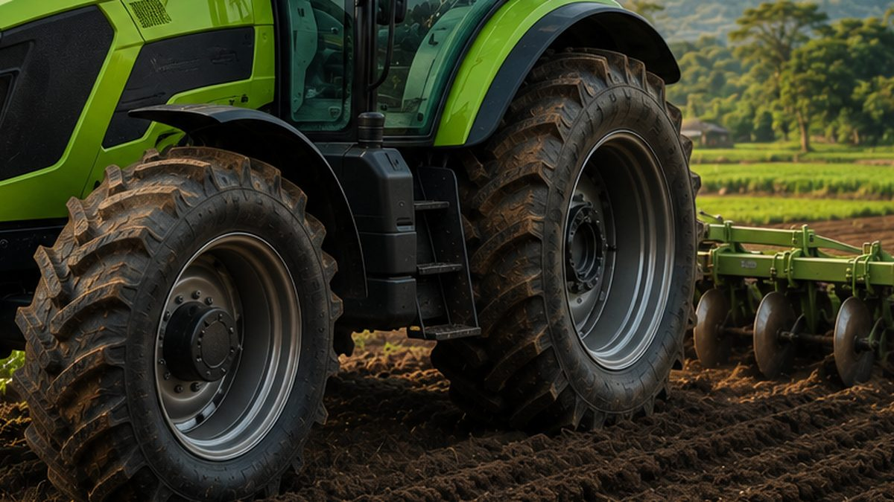

Musim Hujan Segera Tiba: 7 Perawatan Traktor Sebelum Musim Tanam
BMKG memprediksi musim hujan mulai Oktober–November 2026. Pastikan traktor siap bekerja sebelum musim tanam dimulai.
Rainy Season Is Coming: 7 Tractor Maintenance Steps Before Planting Season
BMKG predicts the rainy season will begin in October–November 2026. Make sure your tractor is ready before planting season starts.
雨季将至：播种季前的7项拖拉机保养
印尼气象局（BMKG）预测2026年雨季将于10月至11月开始。请在播种季开始前确保拖拉机状态良好。

Setelah kemarau panjang tahun ini, musim hujan tidak lama lagi datang. BMKG memprediksi musim hujan 2026 mulai datang pada Oktober dari wilayah barat Indonesia, lalu meluas ke sebagian besar Pulau Jawa pada November.
Bagi pemilik traktor, ini tanda untuk bersiap. Datangnya hujan berarti musim tanam dimulai, dan traktor akan bekerja keras mengolah lahan. Pemerintah juga mendorong agar jeda antara panen dan tanam kembali tidak lebih dari 14 hari, sehingga traktor harus siap kapan saja.
7 Perawatan Traktor Sebelum Musim Tanam
1. Bersihkan atau Ganti Filter Udara
Kemarau panjang membuat lahan berdebu, dan debu itu menumpuk di filter udara. Filter yang tersumbat membuat mesin bekerja lebih berat dan boros solar.
2. Ganti Oli Mesin dan Periksa Oli Hidrolik
Ikuti jadwal penggantian oli di buku manual. Periksa juga warna dan level oli hidrolik. Oli yang keruh atau berbusa perlu segera diganti.
3. Cek Sistem Pendingin
Bersihkan radiator dari debu dan sisa jerami, lalu periksa level air radiator dan kondisi selangnya agar mesin tidak cepat panas.
4. Periksa Ban dan Tekanan Angin
Lahan basah membutuhkan traksi yang baik. Pastikan tapak ban masih layak dan tekanan anginnya sesuai anjuran. Baca juga cara memilih ban traktor yang tepat.
5. Lumasi Titik-Titik Gemuk
Beri gemuk pada engsel, pin, dan poros yang bergerak. Pelumasan yang cukup mencegah keausan dan karat saat traktor bekerja di lumpur.
6. Periksa Aki dan Kelistrikan
Traktor yang jarang dipakai selama kemarau berisiko mengalami aki lemah. Bersihkan terminal aki dan pastikan lampu kerja berfungsi.
7. Cek Implemen
Periksa pisau rotary, bajak, atau garu. Ganti pisau yang aus atau patah dan kencangkan baut yang longgar sebelum turun ke lahan.
Kenapa Perawatan Sebelum Musim Penting?
Kerusakan di tengah musim tanam bukan hanya soal biaya servis. Setiap hari traktor berhenti bisa membuat jadwal tanam mundur, padahal tanam tepat waktu sangat menentukan hasil panen.
Kesimpulan
Luangkan satu atau dua hari untuk memeriksa traktor sebelum musim tanam. Selalu ikuti jadwal perawatan di buku manual dan gunakan suku cadang asli agar traktor tetap awet.
Sedang mencari traktor baru? PT Diesel Agri Sukses Sejahtera adalah distributor resmi traktor Zoomlion. Hubungi kami untuk konsultasi dan penawaran harga.
Butuh saran? Hubungi kami.
Sumber: CNN Indonesia, IDN Times, Republika, Kementerian Pertanian.
After this year's long dry season, the rains are not far away. BMKG, Indonesia's meteorology agency, predicts the 2026 rainy season will start in October in western Indonesia and spread to most of Java in November.
For tractor owners, this is the signal to get ready. The rains mark the start of planting season, when tractors work hard preparing the land. The government is also pushing for no more than 14 days between harvest and replanting, so tractors need to be ready at any time.
7 Tractor Maintenance Steps Before Planting Season
1. Clean or Replace the Air Filter
A long dry season leaves fields dusty, and that dust builds up in the air filter. A clogged filter makes the engine work harder and burn more diesel.
2. Change the Engine Oil and Check the Hydraulic Oil
Follow the oil change schedule in the operator's manual. Also check the colour and level of the hydraulic oil. Oil that looks cloudy or foamy should be replaced right away.
3. Check the Cooling System
Clean dust and straw from the radiator, then check the coolant level and the condition of the hoses so the engine does not overheat.
4. Check the Tyres and Tyre Pressure
Wet fields demand good traction. Make sure the tread is still in good condition and the pressure matches the recommendation. See also how to choose the right tractor tyres.
5. Grease All Lubrication Points
Grease the hinges, pins, and moving shafts. Proper lubrication prevents wear and rust when the tractor works in mud.
6. Check the Battery and Electrics
Tractors that sat idle through the dry season are prone to weak batteries. Clean the battery terminals and make sure the work lights function.
7. Inspect the Implements
Inspect rotary blades, ploughs, and harrows. Replace worn or broken blades and tighten loose bolts before heading into the field.
Why Pre-Season Maintenance Matters
A breakdown in the middle of planting season costs more than the repair bill. Every day a tractor stands still can push the planting schedule back, and planting on time has a big effect on the harvest.
Conclusion
Set aside a day or two to inspect your tractor before planting season. Always follow the maintenance schedule in the manual and use genuine spare parts to keep your tractor running for years.
Looking for a new tractor? PT Diesel Agri Sukses Sejahtera is the authorised distributor of Zoomlion tractors. Contact us for advice and a quotation.
Need advice? Contact us.
Sources: CNN Indonesia, IDN Times, Republika, Kementerian Pertanian.
今年漫长的旱季过后，雨季即将来临。印尼气象局（BMKG）预测，2026年雨季将于10月从印尼西部开始，并于11月扩展至爪哇岛大部分地区。
对拖拉机用户来说，这是做好准备的信号。雨季意味着播种季开始，拖拉机将承担繁重的整地作业。政府还提倡收获与再次播种的间隔不超过14天，因此拖拉机必须随时处于可用状态。
播种季前的7项拖拉机保养
1. 清洁或更换空气滤清器
漫长的旱季使田间尘土飞扬，灰尘会在空气滤清器中积聚。滤清器堵塞会使发动机负荷加重、油耗增加。
2. 更换机油并检查液压油
按照使用手册中的换油周期更换机油，同时检查液压油的颜色和油位。液压油浑浊或起泡时应立即更换。
3. 检查冷却系统
清除散热器上的灰尘和秸秆，检查冷却液液位和水管状况，防止发动机过热。
4. 检查轮胎和胎压
湿地作业需要良好的牵引力。请确认胎面状况良好、胎压符合推荐值。另请参阅如何选择合适的拖拉机轮胎。
5. 为各润滑点加注黄油
为铰链、销轴和转动轴加注黄油。充分润滑可防止拖拉机在泥地作业时磨损和生锈。
6. 检查蓄电池和电气系统
旱季长期闲置的拖拉机容易出现蓄电池亏电。请清洁蓄电池接线柱，并确认作业灯工作正常。
7. 检查农具
检查旋耕刀、犁和耙。下田前更换磨损或断裂的刀片，并拧紧松动的螺栓。
为什么季前保养很重要？
播种季中途发生故障，损失远不止维修费用。拖拉机每停机一天，播种计划就可能推迟一天，而按时播种对收成影响很大。
结论
在播种季前抽出一两天时间检查拖拉机。请始终遵循使用手册中的保养周期，并使用原厂配件，让拖拉机经久耐用。
正在寻找新拖拉机？ PT Diesel Agri Sukses Sejahtera 是中联重科拖拉机的授权经销商。欢迎联系我们获取咨询和报价。
需要建议？联系我们。
资料来源： CNN Indonesia, IDN Times, Republika, Kementerian Pertanian.